令和8年度
筑豊地区小学校理科教育研究大会
飯塚市立菰田小学校（福岡県飯塚市）
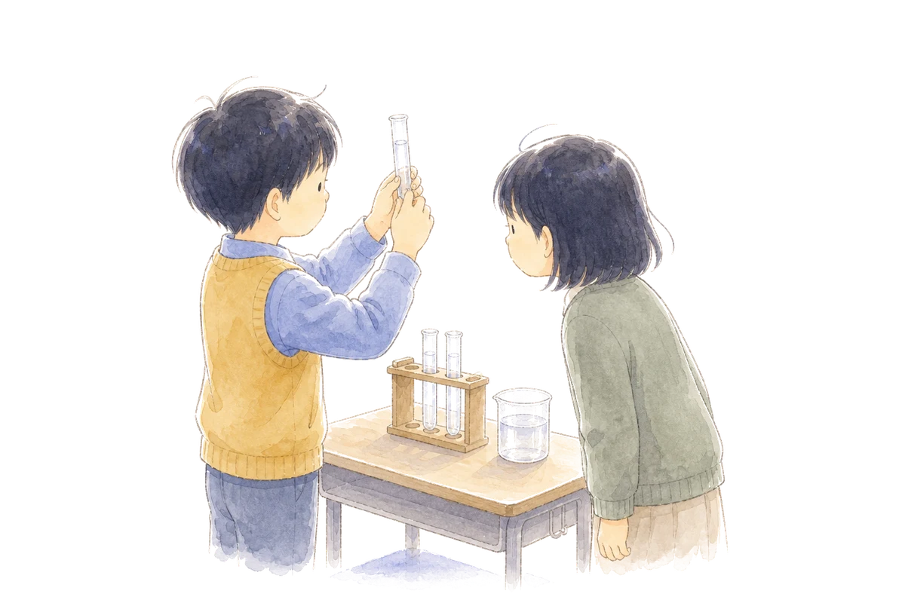
FUKUOKA ELEMENTARY SCIENCE EDUCATION CONFERENCE — CHIKUHO
研究主題
−既有知識をゆさぶる事象提示と
News
Outline
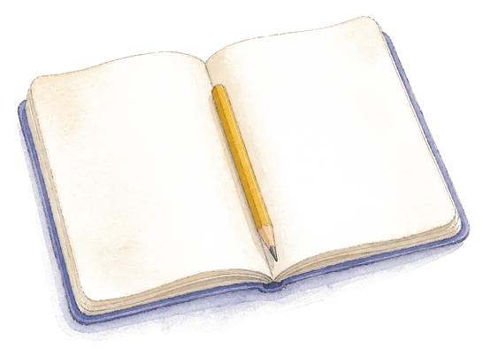
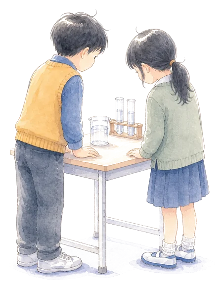
公開授業
研究で目指す子どもの姿を
4つの公開授業で考えます
Program
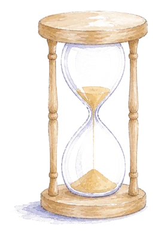
主催者挨拶・来賓挨拶
飯塚市小学校理科教育研究会 研究部長
3年・4年・5年・6年の4授業を公開します
公開授業についての協議・実践報告・指導助言
九州工業大学 学長 安永卓生 氏（会場：体育館）
公開授業
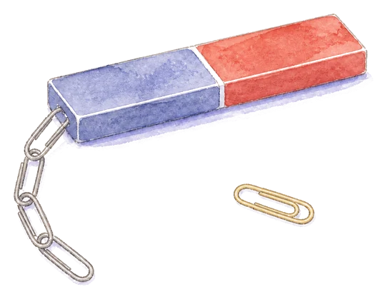
学年別分科会 担当：福岡地区
| 実践発表 | 福岡市立三苫小学校 教諭（お名前は二次案内で） |
|---|---|
| 司会 | 福岡市教育センター 主任指導主事（お名前は二次案内で） |
| 指導助言 | 福岡教育大学附属福岡小学校 校長（お名前は二次案内で） |
| 会場教室 | 後日ご案内します |
公開授業
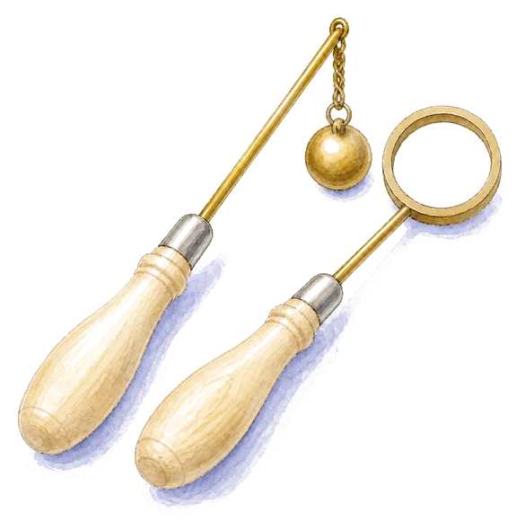
学年別分科会 担当：筑後地区
| 実践発表 | 筑前町立中牟田小学校 教諭（お名前は二次案内で） |
|---|---|
| 司会 | 朝倉市立甘木小学校 教頭（お名前は二次案内で） |
| 指導助言 | うきは市立千年小学校 校長（お名前は二次案内で） |
| 会場教室 | 後日ご案内します |
公開授業
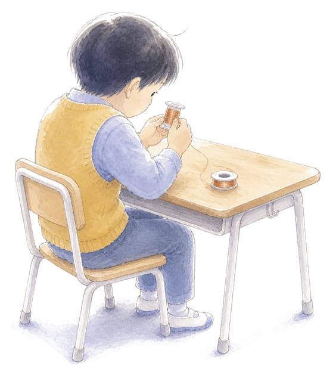
学年別分科会 担当：京築地区
| 実践発表 | 苅田町立片島小学校 教諭（お名前は二次案内で） |
|---|---|
| 司会 | みやこ町立豊津小学校 教頭（お名前は二次案内で） |
| 指導助言 | 苅田町立馬場小学校 校長（お名前は二次案内で） |
| 会場教室 | 後日ご案内します |
公開授業
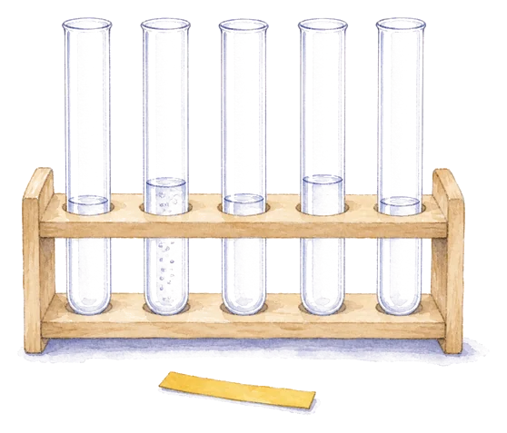
学年別分科会 担当：北九州地区
| 実践発表 | 北九州市立医生丘小学校 教諭（お名前は二次案内で） |
|---|---|
| 司会 | 北九州市立青山小学校 教頭（お名前は二次案内で） |
| 指導助言 | 北九州市立萩原小学校 校長（お名前は二次案内で） |
| 会場教室 | 後日ご案内します |
Lecture
15:50–16:40｜体育館
講師 安永 卓生 氏
Takuo YASUNAGA
九州工業大学 学長
専門は生物物理学。2001年から飯塚キャンパスの情報工学部で研究と教育にあたり、理事・副学長を経て2026年4月に学長に就任されました。会場のある飯塚で長く教壇に立たれた先生です。
Access
駐車場のご案内は、主催者から後日お知らせします。公共交通機関のご利用にご協力ください。
Documents
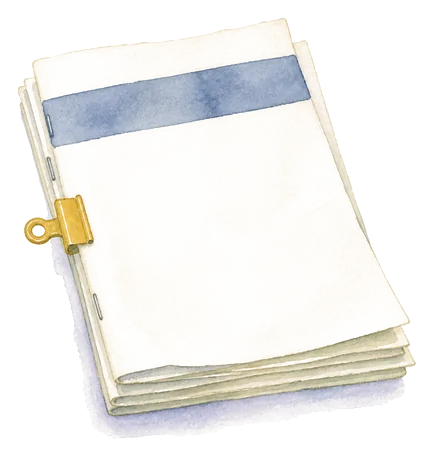
資料は準備でき次第、このページからダウンロードできるようにします。
Entry
Around Iizuka
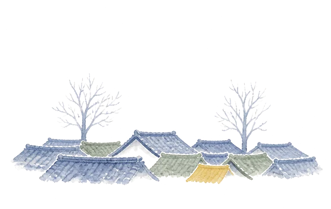
営業時間・休館日は変わることがあります。おでかけの前に各公式サイトでご確認ください。
出典：飯塚市観光ポータル・クロスロードふくおかほか各公式サイト
Contact